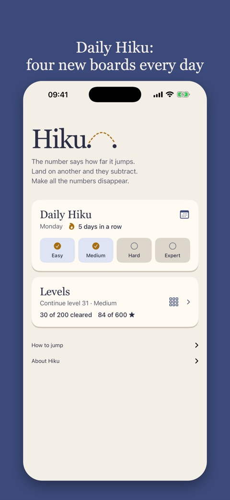
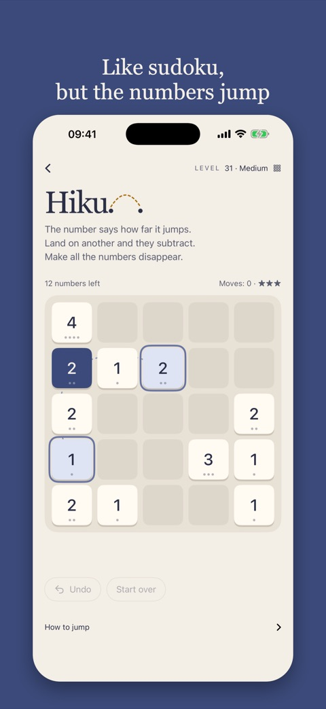
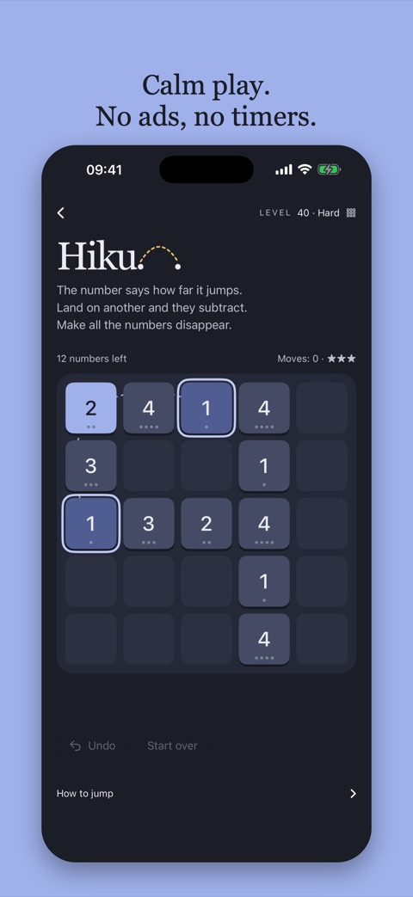

Hiku
Hiku is a calm number puzzle for people who love sudoku: pure logic, no guessing.
The number says how far it jumps. Land on another and they subtract. Make all the numbers disappear.
Daily Hiku
Four new boards every day, from easy to expert. New ones at midnight.
The iPhone app
Love sudoku? Hiku is pure logic with one rule: the number says how far it jumps. Four new boards every day, from easy to expert.
- Daily Hiku: four new boards every day, from easy to expert
- 50 levels, all free, with three lessons that teach you the tricks
- Easy, Medium, Hard and Expert
- Every board can be solved – you just have to find the order
- Three stars if you manage without undoing
- Settings for a hint, a reminder, colors, and light or dark
- No ads, no timers, no account. Works offline.
The app has 50 levels on top of Daily Hiku, and the first ones teach you the tricks one at a time.



How to jump
A number jumps as many squares as it says, across or up and down. A 1 reaches its neighbour, a 3 reaches three squares away. It jumps over anything in between, but must land on another number.
The smaller is taken from the larger, and the rest stays where it landed. Equal numbers both vanish. When a number gets smaller, its jump gets shorter.
Every level can be solved. The wrong order can leave numbers that cannot reach each other. Undo freely and try another way.
Clear a level without undoing to earn three stars. One or two undos earn two, more earn one. Starting over counts as one undo.
Accessible to everyone
Hiku can be played without seeing the board. Every square has a name, like B2, and every number can be read out with where it can jump. Each move is read out with what happened and how many numbers are left.
- The app supports VoiceOver, Voice Control (“tap B2”), dark mode, strong contrast and reduced motion. Colour is never the only cue: the digits and dots always say how far a number jumps.
- The web version can be played with a screen reader or the keyboard alone, follows light and dark mode, and turns animations off for anyone who has asked for less motion. It is built to WCAG 2.2 level AA and tested with the axe tool.
For news sites and publishers
Daily Hiku can be embedded for free on a news site or any web page with two lines of code. No cookies, no tracking, and the game speaks six languages.
The mathematics of Hiku
Why do some boards go wrong, and how far ahead must you look on an expert board? The paper shows that the sum always keeps its parity, that a board splits into groups that never meet again, and that the numbers of each group must split into two piles with equal sums. Whether the game is NP-complete is still open.
Privacy
Hiku collects no personal data. There is no account and no advertising, and it does not track you across apps or websites.
Your solved levels, your stars and your Daily Hiku results stay on your phone; the widget reads them there. Everything is deleted if you delete the app.
From version 1.2 the app sends a few anonymous milestones so we can see how far players get: reaching 1, 9, 10, 20, 30, 40 or 50 cleared levels (and 100, 150, 200), solving a Daily Hiku board and its difficulty, and a Daily Hiku streak of 3, 7, 14, 30 days or more. They go to TelemetryDeck, a privacy-focused European analytics service, and contain nothing that identifies you: the install gets a random number that is hashed one way before it is sent. We use the numbers only to improve the game.
Daily Hiku in the browser sets no cookies and sends no game data. Your results stay in your browser. The site counts visits with Cloudflare Web Analytics, which uses no cookies and does not follow you between sites: we see how many came and from which site, not who.
Support
Questions, found a bug, or stuck on a board? Email es@rubberduck.no.